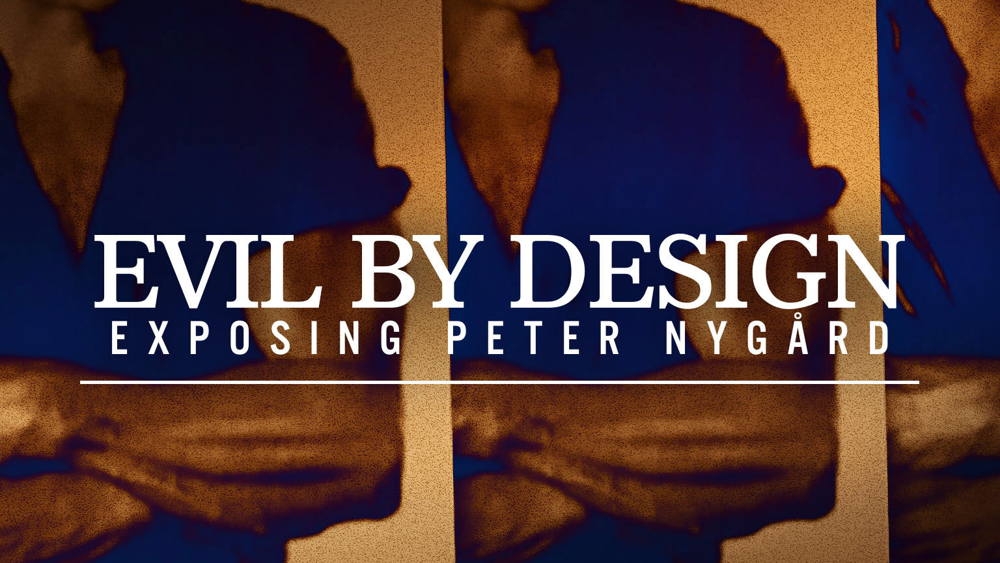

← All work

Evil By Design: Surviving Nygård
Series · 2022
- MY ROLE
- Lead Assistant Editor
- CREDITS
- Blue Ant Media · CBC/Starz · Dir: Deb Wainwright · Editors: Pamela Bayne, Deb Palloway, Barry McMann
A three-part investigative series examining decades of alleged abuse by fashion mogul Peter Nygård, featuring exclusive interviews with survivors, many speaking out for the first time.